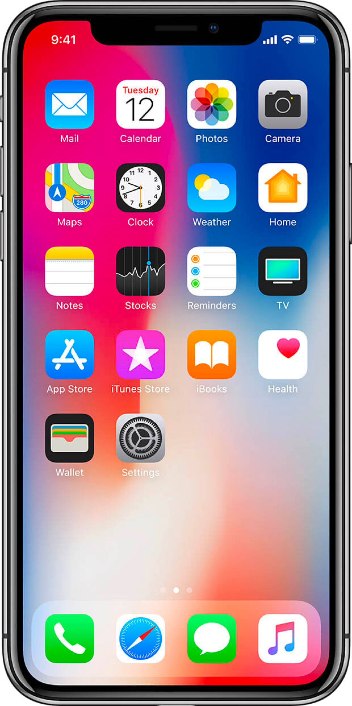

Une enceinte pour tous. Une qualité professionnel.
Placez le HomePod n’importe où dans la pièce. Avec la perception spatiale, il analyse l’acoustique, règle le son en fonction de sa propre position et sépare la musique en deux catégories : son direct et son ambiant. Le tout, de façon automatique. Le son direct, y compris les voix et instruments principaux, est dirigé vers le centre de la pièce, tandis que le son ambiant est diffusé dans les canaux gauche et droit, et renvoyé par le mur. Ainsi, l’espace tout entier se remplit de sonorités riches, parfaitement définies.
2.5 KG
Emmène moi partout
SIRI
Ensemble de six micros pour s’adresser de loin à Siri
AirPlay 2
Prise en charge des enceintes dans plusieurs pièces avec AirPlay 2
50 millions de morceaux qui n’ont jamais sonné aussi bien.
Apple Music vous donne accès à pratiquement tous les morceaux possibles et imaginables. Écoutez en streaming tout ce qui figure à notre catalogue en plus de la musique de votre bibliothèque iTunes. Quant à vos amis, il leur suffit de se connecter à votre réseau Wi‑Fi pour diffuser leur musique en streaming directement sur votre HomePod. Vous n’avez pas d’abonnement Apple Music ? Profitez de trois mois d’essai gratuit. Vous pouvez résilier à tout moment.
Il apprend à connaître la musique que vous aimez.
Avec AirPlay, vous pouvez diffuser de la musique de différents services de streaming et le son provenant d’autres sources : films, vidéos, actualités, sports et livres audio.
Diffusez de l’audio en streaming depuis plus de sources, avec AirPlay.
Dès que vous entendez un morceau qui vous plaît, dites « Dis Siri, j’aime bien ce morceau ». Au contraire, si vous n’appréciez pas un morceau ou un genre spécifique, vous pouvez par exemple dire à Siri « Dis Siri, je n’aime pas trop la musique électro. ». Plus vous parlez au HomePod, plus Apple Music connaît vos goûts musicaux. Ce qui signifie que vous pouvez aussi vous contenter de dire « Dis Siri, mets quelque chose qui va me plaire » pour écouter vos morceaux favoris et faire des découvertes similaires.
L'audio multipièce fait battre le coeur de toutes les oreilles.
Diffusez votre morceau préféré dans une pièce, pendant que votre moitié écoute un podcast en streaming dans une autre.
Tout le monde peut ajouter ses morceaux.
Avec AirPlay 2 et Apple Music, vos amis peuvent enrichir le mix de leur propre musique.
Votre son. À votre façon.
Avec AirPlay 2, vous êtes aux commandes de votre sono. Vous avez plusieurs HomePod ou enceintes compatibles AirPlay 2 ? Profitez de vos morceaux ou podcasts préférés, parfaitement synchronisés, dans toute la maison. Ou bien diffusez différents morceaux dans différentes pièces.